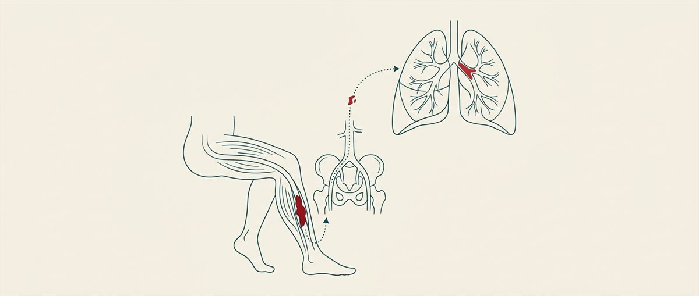

什麼是深層靜脈栓塞？
深層靜脈栓塞（deep vein thrombosis, DVT）是指血液在身體深層的靜脈裡形成血栓（血塊），最常發生在小腿、大腿或骨盆腔的深層靜脈，偶爾也會發生在手臂。它和動脈的問題不同——這裡塞住的是把血液送回心臟的靜脈。
DVT 之所以受重視，不只是因為腿會腫會痛，更因為它可能引發致命的肺栓塞。及早發現、正確治療，是避免嚴重後果的關鍵。

為什麼 DVT 很危險？
1. 肺栓塞（pulmonary embolism, PE）：這是 DVT 最可怕的併發症。血栓若剝落並隨血流跑到肺部，卡住肺動脈，會使肺部無法正常換氧，可能致命。
2. 血栓後症候群（post-thrombotic syndrome）：血栓會破壞靜脈裡的瓣膜，使血液回堵、靜脈壓力升高，造成腿部長期腫脹與疼痛，可能持續數月到數年。
2. 血栓後症候群（post-thrombotic syndrome）：血栓會破壞靜脈裡的瓣膜，使血液回堵、靜脈壓力升高，造成腿部長期腫脹與疼痛，可能持續數月到數年。
症狀
DVT 的症狀通常只發生在單側肢體，常見包括：
- 腫脹——可能突然出現，多為單腳。
- 疼痛或壓痛——常在小腿，站立或走路時更明顯。
- 患處發熱。
- 皮膚發紅或變色。
- 表淺靜脈變得明顯、鼓起。
要特別注意的是：有些人症狀很輕微，甚至完全沒有症狀——這也是 DVT 危險的原因之一。若有風險因子又出現不明原因的單腳腫痛，應提高警覺、儘早就醫。
肺栓塞的警訊（緊急）
若出現以下症狀，可能是血栓跑到肺部（肺栓塞），請立即就醫或撥打 119：
- 突然喘不過氣、呼吸困難
- 胸痛（深呼吸時更痛）
- 咳嗽，甚至咳血
- 心跳加快
- 頭暈、快昏倒或昏厥
為什麼會形成血栓？
靜脈血栓的形成，主要和三個因素有關（醫學上稱為 Virchow 三要素）：
- 血流變慢或滯留——最常見的誘因是長時間不動，例如臥床、久坐、長途飛行或搭車（超過 4 小時）。
- 血管內壁受傷——如手術、外傷或靜脈受損。
- 血液比較容易凝固——如癌症、荷爾蒙、遺傳性凝血異常等。
風險因子
- 長時間不動——臥床、住院、剛動完手術（尤其骨科／大手術）、長途旅行。
- 癌症與化療
- 懷孕與產後
- 口服避孕藥、荷爾蒙補充療法（雌激素）
- 年齡增長（40 歲以上風險上升）、肥胖、吸菸
- 高血壓、糖尿病、靜脈曲張
- 心臟衰竭、肺病、腎病、自體免疫疾病
- 本人或家族曾有靜脈血栓，或遺傳性凝血疾病
診斷
- D-dimer 血液檢查——體內有血栓分解時 D-dimer 會升高，可用來初步評估是否可能有 DVT。
- 靜脈超音波（加壓超音波）——非侵入性、最常用，直接看血流與血栓位置。
- 靜脈攝影、電腦斷層（CT）或磁振靜脈攝影（MRV）——必要時用來看較深部（骨盆、腹腔）或肺部的血栓。
治療
治療目標是阻止血栓變大、防止它跑到肺部，並降低復發。
- 抗凝血藥物（俗稱「血液稀釋劑」）——治療核心。包括傳統的 heparin、warfarin，以及新型口服抗凝血劑（DOAC，如 rivaroxaban、apixaban）。療程通常至少數個月，視情況可能更久。服藥期間要留意出血風險。
- 血栓溶解劑（thrombolytics）——用於嚴重、大範圍的血栓，經靜脈或導管給藥直接溶栓。
- 下腔靜脈濾器（IVC filter）——當病人不能使用抗凝血藥物時，放置濾器攔截腿部血栓、避免跑到肺部。
- 彈性壓力襪——幫助減輕腫脹、降低血栓後症候群，常需穿著兩年以上。
預防：讓血液不要「停滯」
DVT 有很大一部分是可以預防的，重點就是別讓血液長時間滯留在腿部：
什麼時候該就醫？
請立即就醫的情況：
- 出現肺栓塞警訊（突然喘、胸痛、咳血、昏厥）——這是急症。
- 服用抗凝血藥物期間出現異常出血，如吐血、血便（鮮紅或黑色）、血尿或止不住的出血。
預後
血栓通常需要數個月、甚至超過一年才會慢慢溶解，期間要規律回診、依醫囑服藥並追蹤。只要正確治療、按時服藥並落實預防，多數人都能避免肺栓塞等嚴重併發症。整體護心與血管保健原則可參考心血管保健八要素。